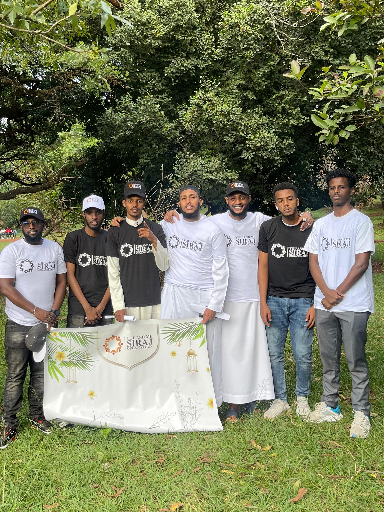

Learn more about who we are, our mission and our journey
YOU & Me Siraj Organisation is a community-based charity founded by a group of young Muslims in Nairobi, Kenya. We are driven by faith, compassion and the desire to make a real difference in the lives of vulnerable children.
Since our founding we have visited multiple children's homes across Nairobi, organised Iftar meals, Quran competitions, food drives and Islamic knowledge classes — all with the support of our generous community.

To serve needy children and vulnerable communities through charity, Islamic education and community engagement — because together we are stronger.
A compassionate community where no child is left behind — where every child has food, love, education and the light of Islamic knowledge.
Compassion, Unity, Faith, Transparency and Community. We believe small acts of kindness done consistently can change the world.
Our activities are rooted in Islamic values and community love
We regularly visit children's homes across Nairobi bringing food, clothes, love and fun activities.
During Ramadhan and throughout the year we organise Iftar meals and food drives for the needy.
We host annual Quran competitions for children from various homes celebrating their love for the Quran.
Weekly online classes on WhatsApp covering Fiqh, Tafsir and Seera led by Ustadh Abdulrahim.
We collect and distribute clothes to children and families who need them most.
We bring people together to support one another — because YOU and ME together make a difference.
"The best of people are those who are most beneficial to people."— Prophet Muhammad ﷺ